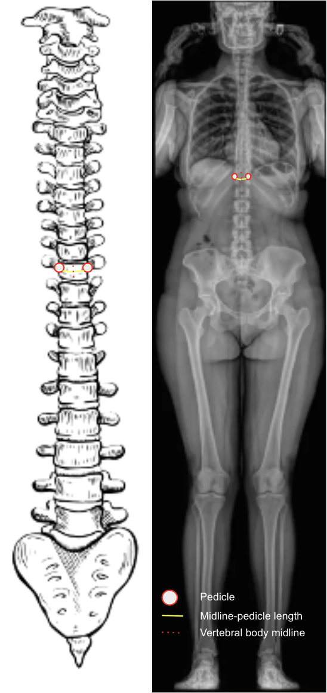
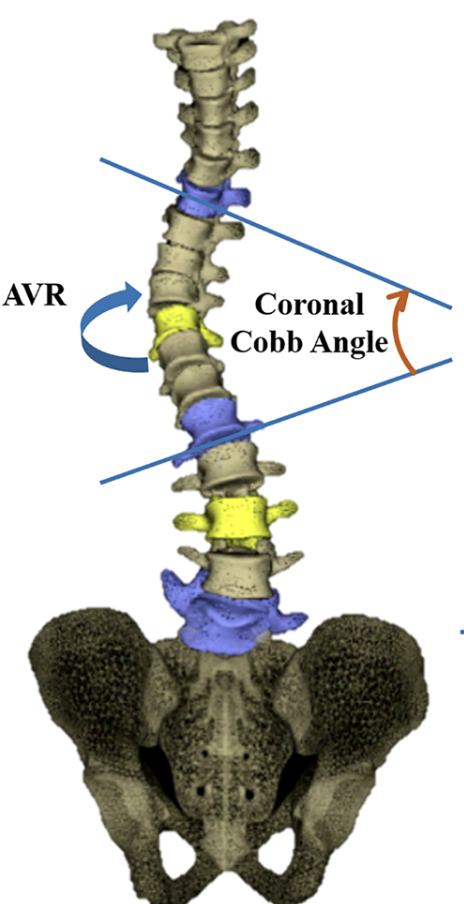
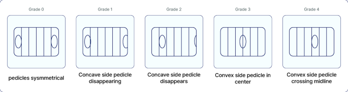

3D reconstruction image adapted from:
Labaki C, Otayek J, Massaad A, Bakouny Z, Karam M, Hanna C, Kassab A, Bizdikian AJ, Mjaess G, Karam A, Skalli W. Is the apical vertebra the most rotated vertebra in the scoliotic curve?. Journal of Neurosurgery: Spine. 2019 Aug 23;31(6):873-9.
Nash-Moe Classification adapted from:
Kim JK, Wang MX, Park D, Chang MC. Deep learning algorithm for the automatic assessment of axial vertebral rotation in patients with scoliosis using the Nash–Moe method. Scientific Reports. 2025 Jul 22;15(1):26647.
1) Description of Measurement
The Apical Vertebral Rotation (AVR) quantifies the degree of vertebral rotation around the longitudinal axis of the spine, most often assessed in patients with scoliosis on a standing PA or AP full-spine X-ray.
AVR provides information on the axial component of the scoliotic deformity, complementing the coronal (Cobb angle) and sagittal (kyphosis/lordosis) measurements.
It reflects rib hump prominence and trunk asymmetry, influencing both the cosmetic and biomechanical impact of scoliosis.
AVR measurement is key for monitoring curve progression, brace effectiveness, and surgical correction (particularly derotation maneuvers).
2) Instructions to Measure
3) Normal vs. Pathologic Ranges
4) Important References
Nash CL Jr, Moe JH. A study of vertebral rotation. J Bone Joint Surg Am. 1969;51(2):223–229.
Perdriolle R, Vidal J. Thoracic idiopathic scoliosis curve evolution and prognosis. Spine. 1985;10(9):785–791.
Lenke LG, Betz RR, Harms J, et al. Adolescent idiopathic scoliosis: a new classification to determine extent of spinal arthrodesis. J Bone Joint Surg Am. 2001;83(8):1169–1181.
Kim HJ, Chang DG, Lenke LG, et al. Rotational Changes Following Use of Direct Vertebral Rotation in Adolescent Idiopathic Scoliosis: A Long-Term Radiographic and Computed Tomography Evaluation. Spine (Phila Pa 1976). 2024 Aug 1;49(15):1059-1068. doi: 10.1097/BRS.0000000000004869.
Kuklo TR, Potter BK, Polly DW Jr, et al. Reliability analysis for manual adolescent idiopathic scoliosis measurements. Spine (Phila Pa 1976). 2005 Feb 15;30(4):444-54. doi: 10.1097/01.brs.0000153702.99342.9c.
5) Other info....
AVR reflects axial deformity, which cannot be assessed from Cobb angle alone.
It is a critical determinant of rib hump prominence and cosmetic asymmetry.
Modern 3D imaging (EOS, CT, or surface topography) can provide more accurate rotational analysis, but X-ray–based AVR remains the standard clinical method.
Rotation is typically toward the convex side of the curve.
In postoperative evaluation, reduced AVR indicates successful derotation correction.
For research or detailed assessment, 3D reconstruction or biplanar low-dose EOS imaging can quantify AVR in true degrees.
When following scoliosis progression, consistency in measurement technique and observer is critical for reliable comparison.